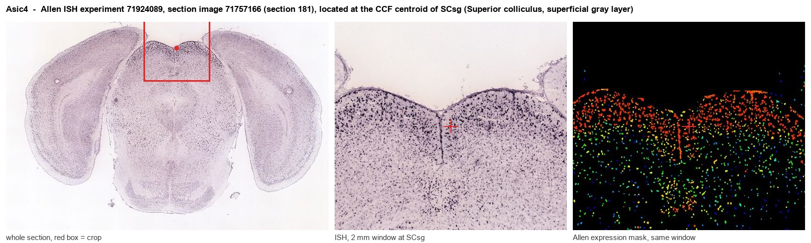
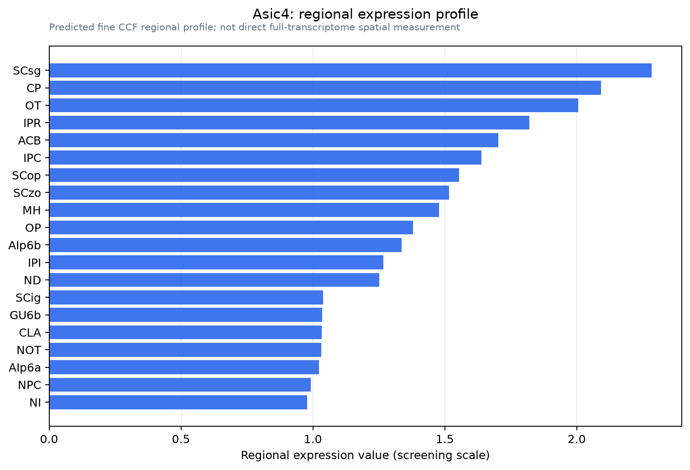

Asic4
Acid-sensing ion channel 4 (ASIC4) (Amiloride-sensitive cation channel 4)
Spatial tier: REGION_BIASED · Class: ION_CHANNEL · Top region: SCsg (Superior colliculus, superficial gray layer) · Positive regions: 37/554
44.3Discovery Score
40.3Targetability Score
CEvidence grade C
What this means: Asic4: fine CCF profile is region-biased toward SCsg (top regions: SCsg, CP, OT, IPR, ACB); this is a discovery lead, not direct proof.
Function in SCsg: evidence, prediction, innovation
- Gene function
- ASIC4 is a member of the acid-sensing ion channel family of proton-gated sodium channels (ENaC/degenerin superfamily). Unlike ASIC1a or ASIC3 it is not itself gated by protons in heterologous systems; instead it acts as a modulatory subunit that changes the surface expression and proton sensitivity of other ASICs, especially ASIC1a.
- Region function
- The superficial gray layer of the superior colliculus is the main retinorecipient midbrain visual layer; its neurons are direction- and orientation-selective, are modulated by locomotion and reward, and feed orienting, looming-evoked defence and visuomotor behaviour.
- Published in this region
- expression only Hoshikawa 2017 mapped Asic4 transcripts by in situ hybridisation and Asic4-lacZ reporter across the adult mouse brain and listed the superior colliculus among the structures where ASIC4 mRNA is preferentially concentrated; Lin 2015, using an Asic4-CreERT2 knock-in reporter, showed ASIC4 is expressed mainly in calretinin/VIP interneurons and NG2 glia and found no deficit in fear learning, so no function has been assigned in the colliculus.
- Predicted function
- Prediction: in the superficial superior colliculus ASIC4 most plausibly sits in calretinin/VIP-type inhibitory interneurons and NG2 glia, where it would set ASIC1a surface levels and thus how strongly these cells respond to the activity-dependent acid transients released with synaptic vesicles during intense visual drive. Asic4 deletion should raise ASIC1a-mediated currents in collicular interneurons, sharpening or destabilising inhibitory gain; predicted behavioural readouts are altered looming-evoked escape/freezing thresholds and changed visual contrast sensitivity rather than gross blindness.
- Innovation
- ★★★★★ 5/5 Expression in the colliculus is documented but nobody has tested ASIC4 function in any visual circuit, and a Cre knock-in line already exists.
- Tools
- Asic4-CreERT2 knock-in/knockout mice (Lin 2015) and Asic4-lacZ (KOMP) reporter; amiloride and psalmotoxin-1 for ASIC pharmacology (no ASIC4-selective drug); anti-ASIC4 antibodies; collicular interneuron access via Calb2-Cre and Vip-Cre.
- References
Direct evidence located at the region

Allen ISH experiment 71924089, section image 71757166 (section 181): the section that contains the CCF centroid of Superior colliculus, superficial gray layer according to the Allen image-to-atlas alignment (reference_to_image), with a 2 mm window around that point. Left: whole section, red box = window. Middle: ISH signal. Right: Allen's expression-mask view of the same window. open this image in the Allen viewer
Look it up yourself: Allen Mouse Brain ISH for Asic4Allen reference atlas: SCsg (structure 842)ABC Atlas MERFISH viewer(in the ABC Atlas choose dataset MERFISH-C57BL6J-638850-CCF, colour cells by gene "Asic4" or by parcellation_substructure "SCsg")All genes confined to SCsg + 3-D brain
Direct spatial evidence
MERFISH REGION LOCATOR

Regional expression figure

Predicted WMB × fine-CCF profile; not direct full-transcriptome spatial measurement.
Spatial profile
Evidence and specificity
- Evidence status
- PREDICTED_FINE
- Direct sources
- None; predicted localization only
- Exclusive threshold
- 12 positive regions out of 554
- Spatial specificity
- 0.309
- Top-region fraction
- 0.046
- Filter status
- PASS
Interpretation limits
- Cell-type-to-region projection is imputed expression, not direct spatial measurement.
- Adult reference atlases do not establish stability across age, sex, strain, state, or disease.
- Transcript abundance does not guarantee protein abundance or genetic-tool performance.